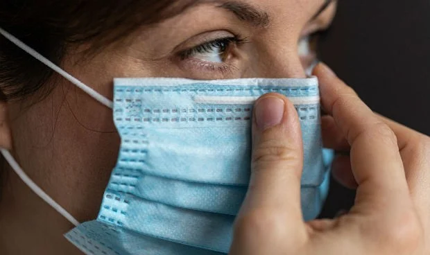

| El brote de coronavirus ha sido ampliamente reportado en los noticieros del mundo y la Organización Mundial de la Salud (OMS),
lo ha declarado oficialmente como una pandemia, desde el pasado 11 de marzo.
Esto significa que la enfermedad se está extendiendo en varios países de todo el mundo, al mismo tiempo afectando a cientos de miles de
personas en todos los continentes,causando un número de muertes que, a la fecha, sigue en ascenso.Mientras las autoridades sanitarias trabajan para frenar su expansión y efectos en la población,traemos una guía sobre esta enfermedad y qué debemos hacer para prevenirla. |
Recomendaciones para Prevenir el Covid-19
Toma las precauciones adecuadas e infórmate bien para protegerte y cuidar de quienes te rodean. Sigue las recomendaciones de los organismos de salud pública de tu zona.
Para conocer las directrices que se aplican en tu región, solicita información a las autoridades sanitarias locales.
Para evitar la propagación de la COVID‑19, sigue estas recomendaciones:
Mantén una distancia de seguridad con otras personas (de 1 metro como mínimo), aunque no parezca que estén enfermas.
Utiliza mascarilla en público, especialmente en interiores o cuando no sea posible mantener el distanciamiento físico.
Prioriza los espacios abiertos y con buena ventilación en lugar de los espacios cerrados. Si estás en interiores, abre una ventana.
Lávate las manos con frecuencia. Usa agua y jabón o un desinfectante de manos a base de alcohol.
Vacúnate cuando sea tu turno. Sigue las directrices sobre vacunación de las autoridades locales.
Cuando tosas o estornudes, cúbrete la nariz y la boca con el codo flexionado o con un pañuelo.
Si no te encuentras bien, quédate en casa.
En caso de que tengas fiebre, tos o dificultad para respirar, busca atención médica. Llama por teléfono antes de acudir a tu proveedor de servicios sanitarios para que te dirijan al centro médico adecuado. De esta forma, te protegerás a ti y evitarás la propagación de virus y otras infecciones.
Mascarillas

Las mascarillas bien colocadas pueden ayudar a prevenir que las personas que las llevan contagien el virus a otras. Sin embargo, no protegen frente a la COVID‑19 por sí solas, sino que deben combinarse con el distanciamiento físico y la higiene de manos. Sigue las recomendaciones de las autoridades sanitarias locales.